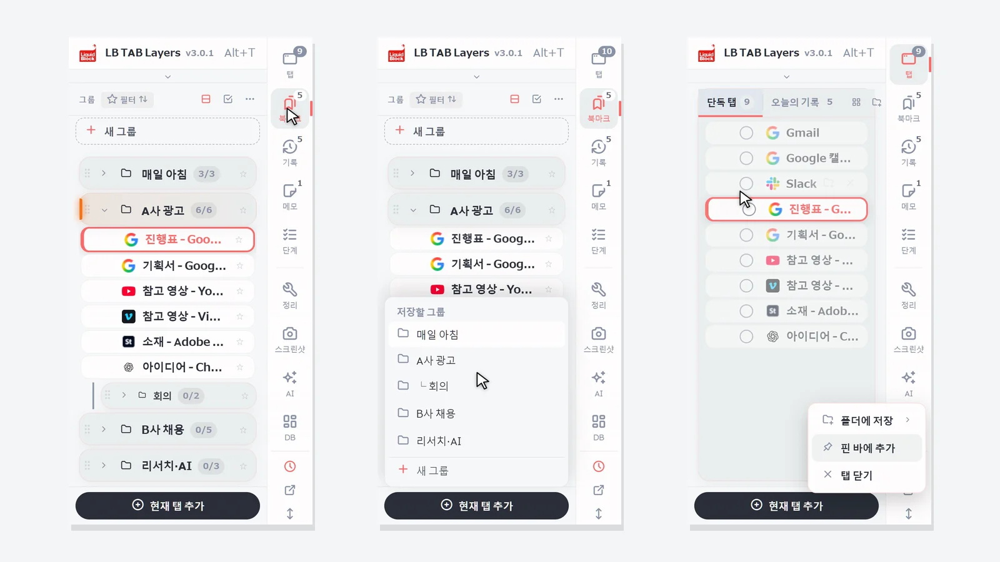
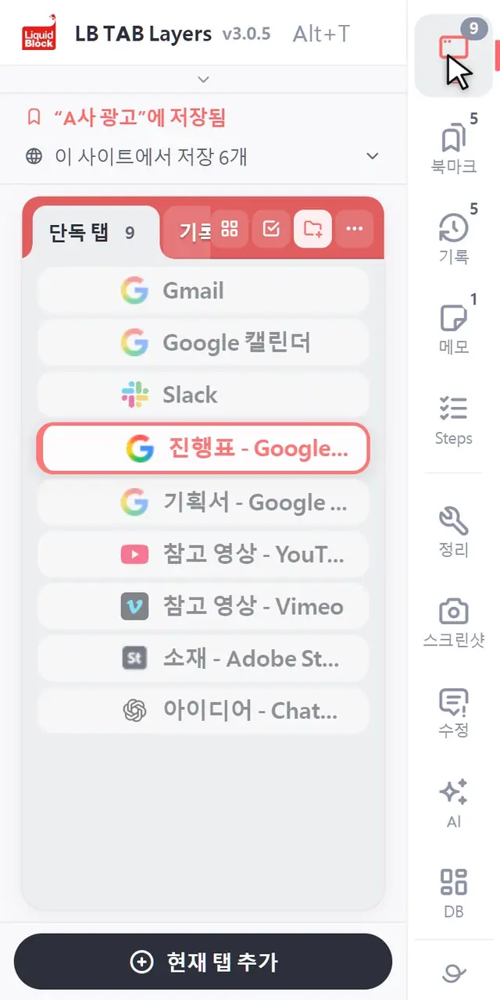
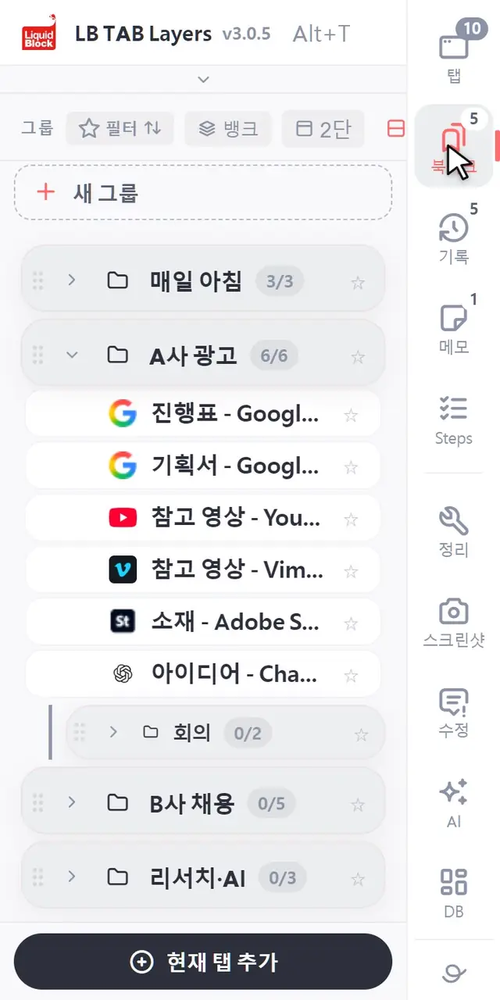
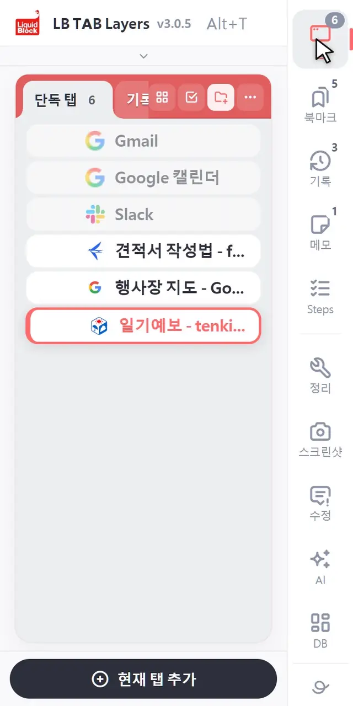
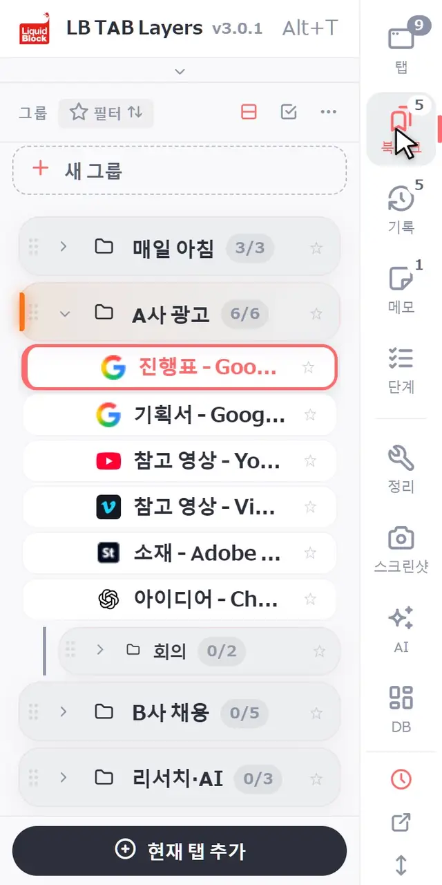
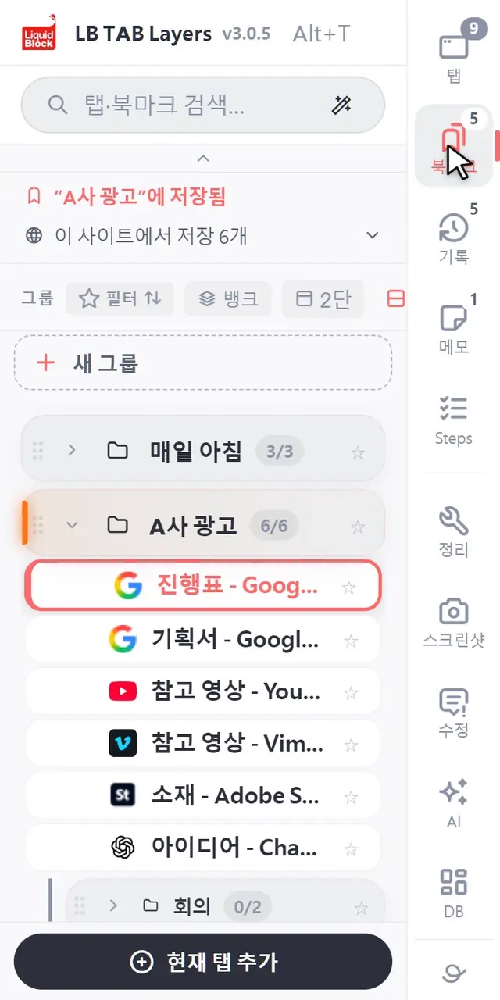
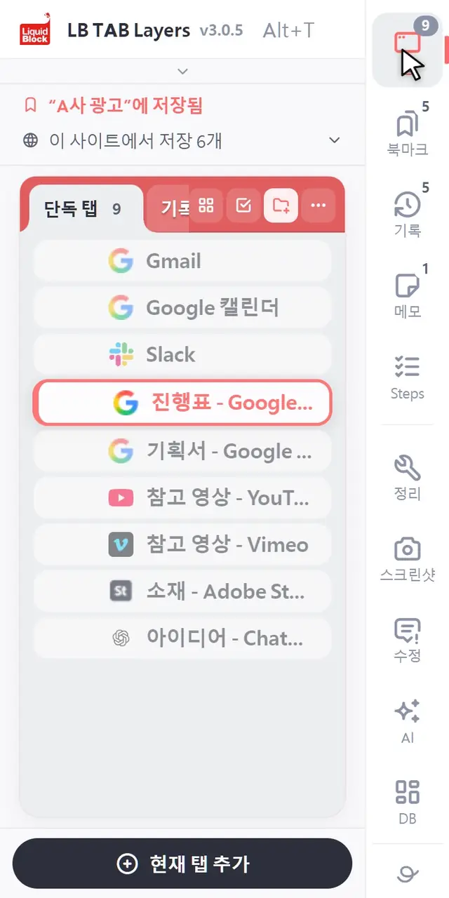

LB TAB Layers는 Alt+T(Mac은 Option+T)로 엽니다. 처음 익힐 것은 세 가지뿐입니다. 아래의 현재 탭 추가로 지금 탭을 그룹에 저장하고, 그룹의 ▶로 한꺼번에 열고, ■로 한꺼번에 닫습니다. 저장한 탭은 Chrome 북마크로 남으므로, 탭을 닫거나 Chrome을 다시 시작해도 사라지지 않습니다.
LB TAB Layers를 설치해 주셔서 감사합니다. 이 페이지에는 처음 5분 동안 알아 두면 좋은 것만 모았습니다.
생각은 간단합니다. 탭은 “지금” 하고 있는 일, 북마크는 “나중에” 다시 쓸 것, 오늘의 기록은 오늘 본 것의 “기록”입니다. 이 세 가지를 하나의 사이드 패널에서 오갑니다.
💡 Alt+T(Mac은 Option+T)로 언제든 열 수 있습니다. 도구 모음의 LB TAB Layers 아이콘을 눌러도 열립니다. 아이콘이 보이지 않으면 퍼즐 모양 아이콘에서 LB TAB Layers를 고정해 주세요.
1. 화면 보는 법
패널 가장자리에 세로로 버튼이 늘어서 있습니다. 위에서부터 탭・북마크・기록・메모・단계. 누르면 그 화면으로 바뀝니다. 아이콘 오른쪽 위의 숫자는 열려 있는 탭 수, 그룹 수 등입니다.
- 탭 — 지금 열려 있고 아직 어디에도 저장하지 않은 탭
- 북마크 — 저장한 탭을 일(프로젝트)마다 그룹으로 묶은 것
- 기록 — 오늘 본 페이지. 저장하지 않은 페이지도 여기서 찾을 수 있습니다
- 메모・단계 — 작업 메모와 순서대로 진행하는 체크리스트
구분선 아래는 도구입니다. 처음에는 쓰지 않아도 괜찮습니다.

2. 기본 조작
그룹 만들기
북마크 화면에서 목록 맨 위의 ＋ 새 그룹을 누릅니다. 이름은 “C사 웹사이트”, “매일 아침”처럼 일(프로젝트)마다 하나씩 만드는 것을 추천합니다.
지금 탭 저장하기
패널 아래의 현재 탭 추가를 누르고, 저장할 그룹을 고릅니다. 이미 들어 있는 그룹에는 저장됨이라고 표시됩니다.

열린 탭을 한꺼번에 저장하기
탭 화면에서 탭 왼쪽의 ○를 누르면 선택이 시작됩니다. 저장할 탭의 ○를 계속 누르고, 아래의 그룹으로에서 저장할 그룹을 고릅니다. 탭을 하나씩 그룹으로 끌어다 놓아도 저장됩니다.

▶로 한꺼번에 열고, ■로 한꺼번에 닫기
그룹에 마우스를 올리면 나오는 ▶로 안의 탭을 모두 엽니다. 열린 탭은 그룹과 같은 이름・색의 Chrome 탭 그룹으로 묶입니다. 작업이 끝나면 ■로 그 탭 그룹을 통째로 닫습니다. 닫아도 저장은 그대로 남습니다.

찾기
위의 검색창에 입력하면 열린 탭・저장한 탭・오늘의 기록을 한꺼번에 찾을 수 있습니다. 조금 틀리게 입력해도 찾아 줍니다.

3. 편리한 관리 방법
일(프로젝트)마다 그룹 하나
그룹은 “일 하나를 위한 책상” 같은 것입니다. 하루는 이것만으로 돌아갑니다.
- 아침 — 오늘 할 일의 그룹을 ▶로 열고, 어제 하던 곳부터 시작
- 일을 바꿀 때 — 지금 일을 ■로 닫고, 다음 일을 ▶로 열기
- 퇴근할 때 — ■로 닫기만 하면 됩니다. 내일 다시 ▶로 돌아올 수 있습니다
매일 쓰는 사이트는 핀 바에
메일이나 캘린더처럼 매일 여는 사이트는, 탭이나 북마크를 오른쪽 클릭해서 핀 바에 추가. 패널 위쪽에 작은 아이콘으로 놓이고, 한 번 클릭으로 열립니다(12개까지). 끌어다 놓아도 됩니다.

일마다 창을 나누기
그룹을 오른쪽 클릭해서 새 창에서 열기를 고르면, 다른 창에 그 그룹의 탭 그룹으로 열립니다. 두 가지 일을 나란히 할 때나 두 번째 모니터에서 쓸 때 편리합니다.
저장을 깜빡해도, 오늘의 기록이 있다
모든 것을 저장하지 않아도 괜찮습니다. 저장하지 않은 페이지도 기록에서 오늘 본 순서대로 찾을 수 있습니다. 중요한 것은 그룹에, 나머지는 닫아 버리는 정도가 딱 좋습니다.
🔒 저장한 탭은 Chrome 북마크로 남습니다. 탭을 닫아도, Chrome을 다시 시작해도 사라지지 않으며, LB TAB Layers가 북마크를 어딘가로 보내지 않습니다. 메모처럼 확장 안에 있는 데이터는 설정에서 내보내 두면 안심입니다.
더 자세한 기능은 기능 소개에 정리해 두었습니다.
자주 묻는 질문
Q. LB TAB Layers는 어떻게 여나요?
키보드의 Alt+T(Mac은 Option+T)를 누르면 열립니다. 도구 모음의 LB TAB Layers 아이콘을 눌러도 열립니다.
Q. 확장을 삭제하면 저장한 탭도 사라지나요?
사라지지 않습니다. 저장한 탭은 Chrome 북마크에 그룹과 같은 이름의 폴더로 남습니다. 메모처럼 확장 안에 있는 데이터는 사라지므로 설정에서 먼저 내보내 주세요.
Q. 검색은 어디까지 찾나요?
열린 탭, 그룹에 저장한 탭, 오늘의 기록을 한꺼번에 찾습니다.
Q. 무료로 쓸 수 있나요?
네. 무료 버전에서도 그룹을 5개까지 만들 수 있습니다. 오늘의 기록・단계・대시보드・AI 검색은 PRO 기능이지만, 설치 후 90일 동안은 모두 쓸 수 있습니다.
먼저 지금 하는 일 하나를 그룹으로 만들어 보세요.
Alt+T로 열고, 지금 탭을 저장하고, ▶로 열고 ■로 닫기. 계정 등록 없음 · 저장은 Chrome 북마크 · 90일 동안 모든 기능 무료
Chrome에 무료로 추가 →